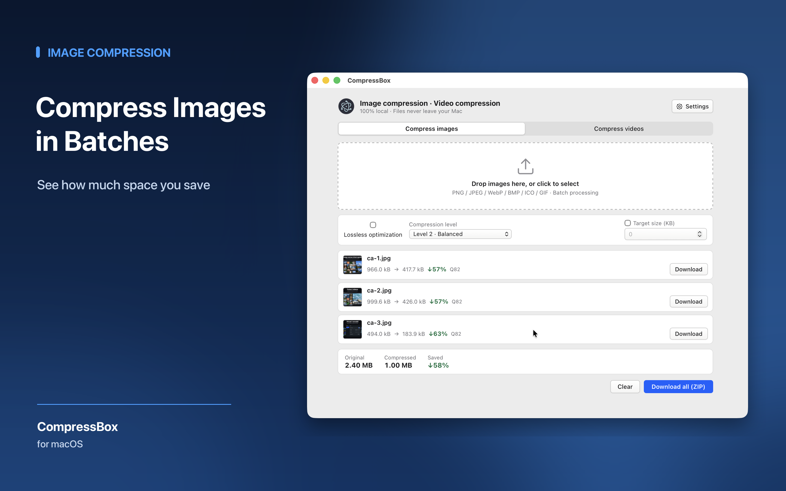
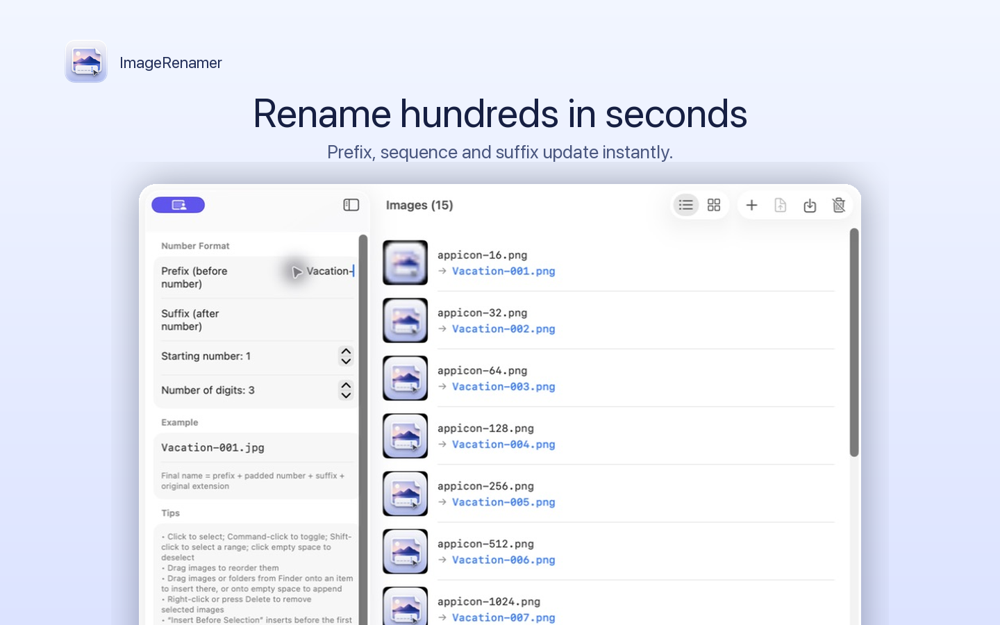

Images & videoCompressBox
Compress batches of images and videos locally on your Mac. Choose your settings, review the result, and export when it looks right.
- Batch image compression
- MP4, MOV, and M4V video
- Files stay on your Mac
Independent Mac utilities
Compress media, organize image filenames, and bring files down from your own server. Three focused apps for the work you already do on a Mac.
Explore the appsAvailable on the Mac App Store

Images & videoCompress batches of images and videos locally on your Mac. Choose your settings, review the result, and export when it looks right.

Image organizationTurn a folder of uneven filenames into an ordered sequence. Reorder images, preview the names, and export renamed copies.
Connect to an SFTP server you control. Browse remote folders, preview with Quick Look, and download files or folders to your Mac.
Start with a task